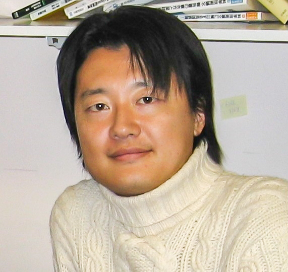
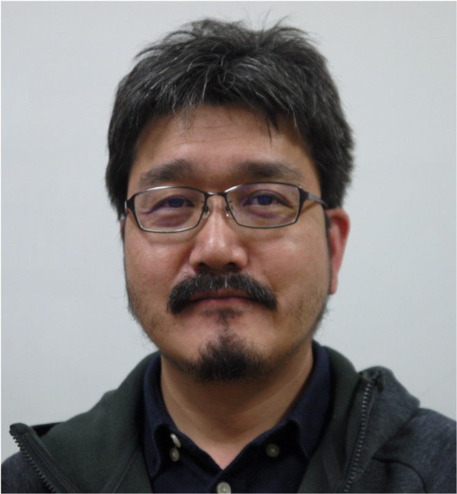
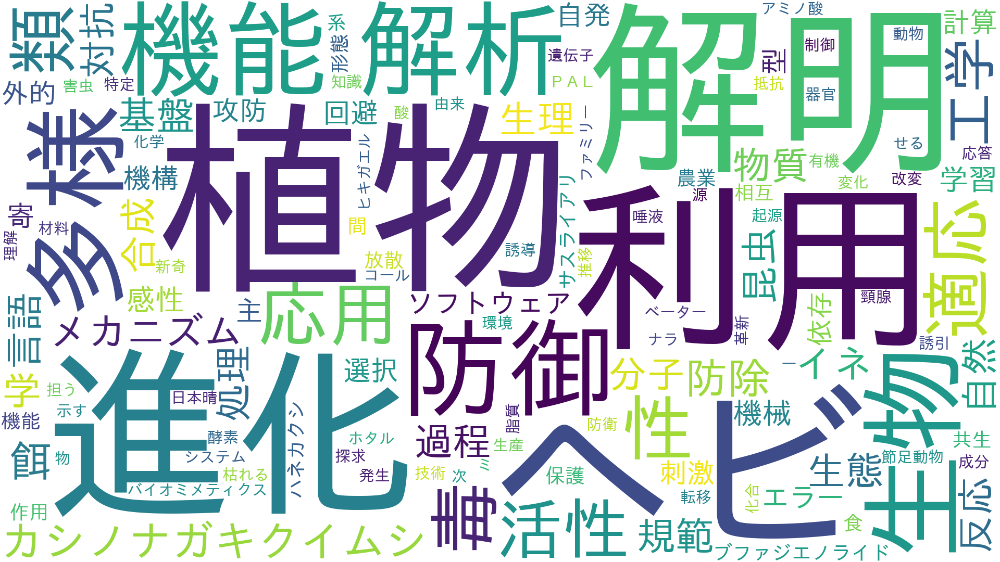

ENTRANCE
LAB
創発ソフトウェア研究室
 
教員 : 森 直樹（教授），岡田 真（助教）
アルゴリズムやモデリングなど情報科学を基礎とした知能ソフトウェアの開発と応用に関する研究を行っています．
ワードクラウドを見てみよう！

学生のコメント：
最も大きく見えるのが進化型計算です．
大阪府立大学では，学部1年生の総論の授業で「なにかしらの進化についてレポートを書け」という課題が恒例でした．（なお学生は皆，結構苦戦していた模様）
金融市場取引の分析といった研究も特徴的です．
他にも自然言語処理や画像処理など，幅広い分野での研究に取り組んでいるそうです．